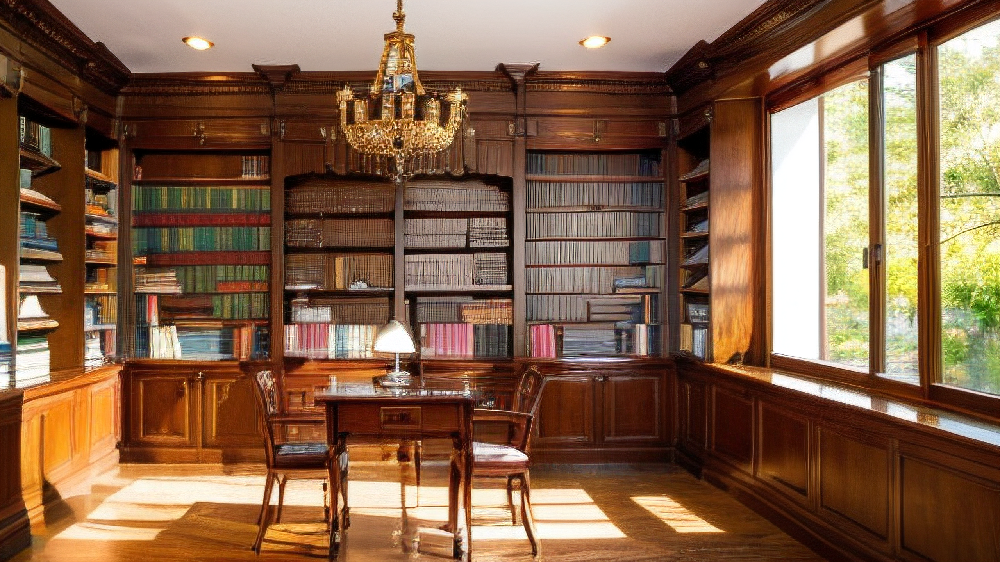
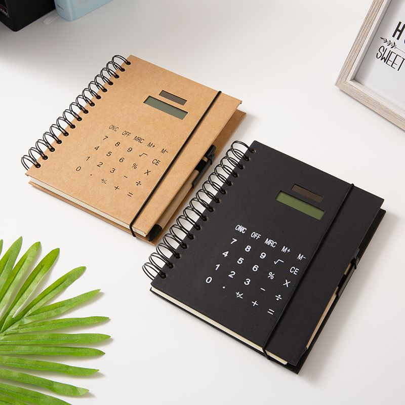
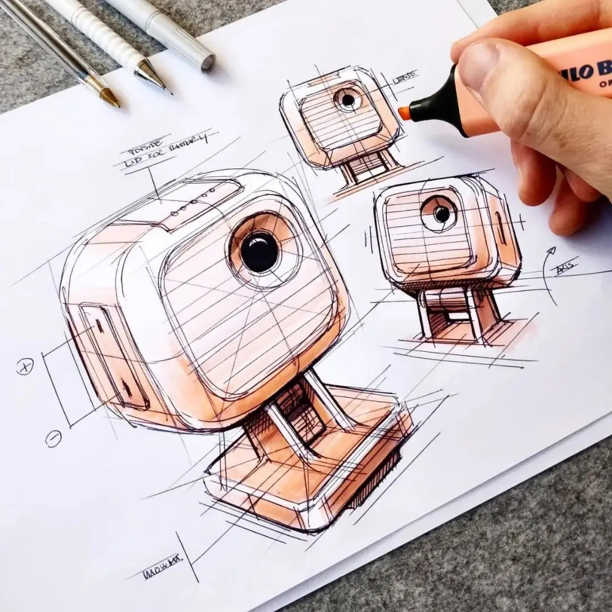
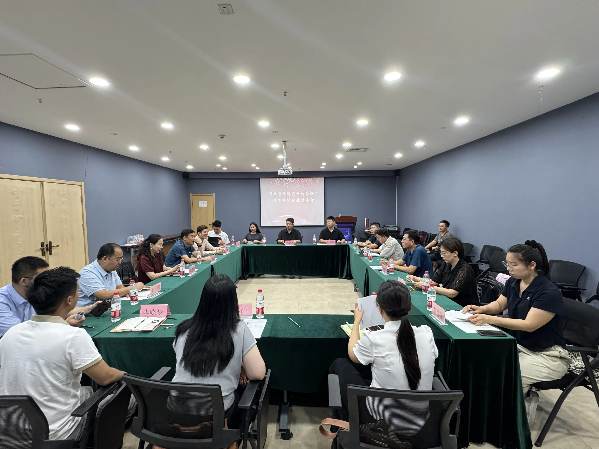
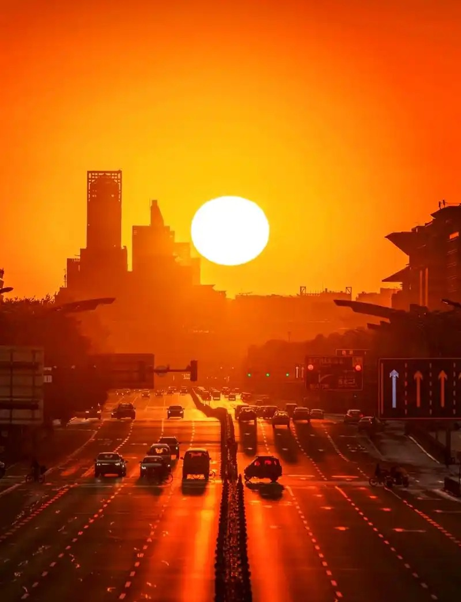

现阶段深耕艺术设计、品牌视觉、数字创意相关创作，熟练使用主流设计软件，持续积累平面、IP文创、视觉全案设计作品。依托中德合作项目优势，同步提升德语能力与国际化设计思维，接轨欧洲现代品牌设计体系。
注重理论结合实践，在校积极参与专业课程作业、文创设计项目与学部交流活动，不断打磨个人设计风格，为后续德国留学与创意行业发展夯实基础。


通过课程作业和个人创作，持续积累平面设计、品牌视觉、IP文创等方向的作品。每个阶段的练习都是对自身设计能力的磨炼与提升。

积极参加学部组织的中德学术交流活动、设计工作坊及展览，拓宽视野，了解不同设计语境下的创作方法和思维模式。

期望通过中德两国的系统学习，成长为一名具有国际视野的品牌设计师。将东方审美与欧洲设计方法论相融合，在品牌设计领域找到属于自己的表达方式。
未来无论是在国内还是国际市场，都希望能用设计的力量为品牌赋予独特的文化内涵和视觉生命力，做出有温度、有思考的设计作品。